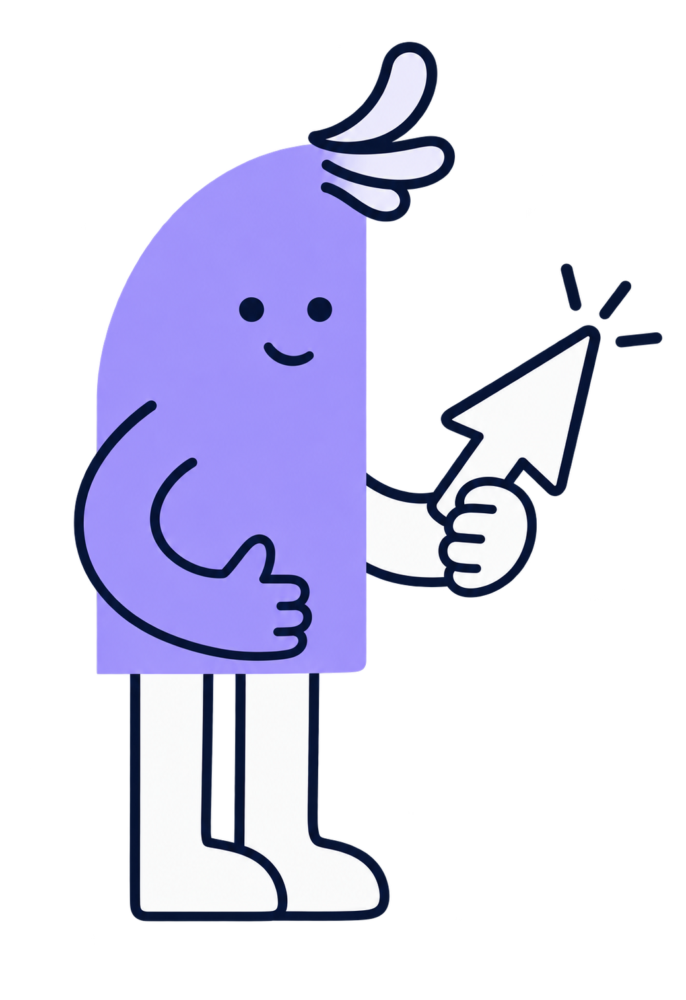

Джерело орієнтирів: МОН України, інформатична освітня галузь. Це перша інтерактивна версія: включено вибрані орієнтири двох напрямів, не повний перелік додатка 6.1. Пояснення і вправи — авторські навчальні приклади.
Обирай свій цикл навчання, відкривай пояснення, виконуй завдання та відстежуй власні досягнення.

Джерело орієнтирів: МОН України, інформатична освітня галузь. Це перша інтерактивна версія: включено вибрані орієнтири двох напрямів, не повний перелік додатка 6.1. Пояснення і вправи — авторські навчальні приклади.